01 · First threshold
ME
The Earth Remembers
Presence, held close.
- Moment
- Morning grounding
- Texture
- Rich satin
- Botanicals
- Saffron · Cardamom · Vetiver
A house of ritual · Est. 2026
Ritual, Reborn.
Before borders had names, the water already knew the way.
Ships left one shore carrying stone, timber, metal, fibre and the work of human hands.
They reached another carrying evidence that distance could be crossed.
c. 2300 BCE — Mesopotamian kings boast of ships from a far land, moored at their quays.
On clay, a name survived:
Meluhha.
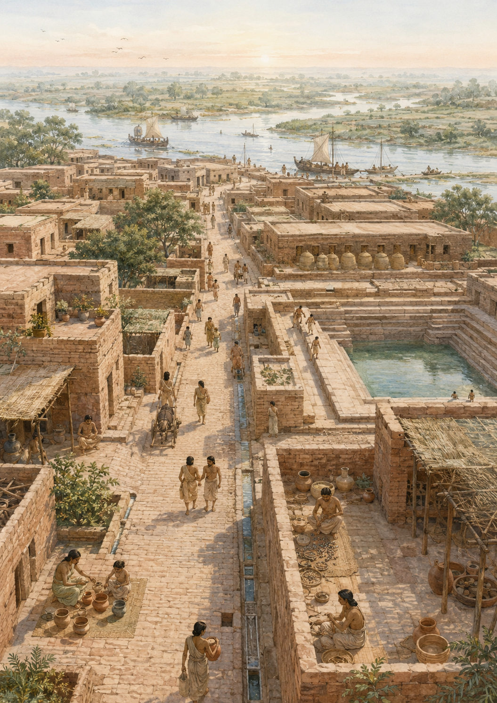
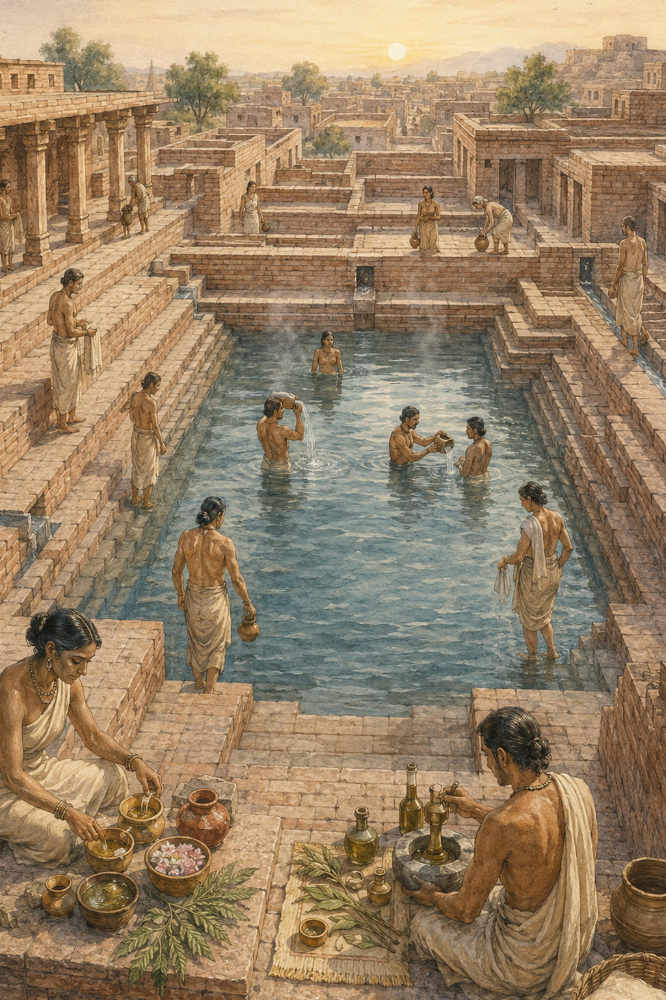
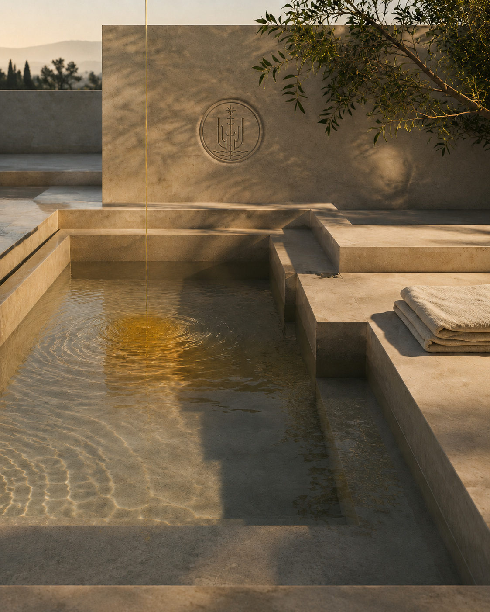
Order · Craft · Water · Cultivation · Civic lifeA civilisation remembered for what it built — and for how it cared for the body.
There was a time when care was not separated from life. Water prepared the body. Oil protected it. Fragrance marked the threshold between one state and the next.
The cities fell silent. The river changed its course. The Indus script still refuses to surrender its voice.
Four thousand years later, the name returns.
As a house of fragrance.
Prologue
Some things survive because they were protected. Others survive because the body refused to forget.
MELUHHA does not claim to recover a lost formula. It carries forward a more enduring intelligence: that care becomes meaningful when it is given form, rhythm and attention.
5 body oils5 thresholds1 ritual system
Not nostalgia. A return.
The House
We believe daily care deserves the gravity of ceremony and the ease of instinct.
Every object must be useful. Every word must be true. Every ritual must leave the person more present than it found them.
Only what is meaningful and masterfully made may bear the seal.
The vessel has weight. The memory has none. Both remain.
The System
A different way of returning each time.
01 · First threshold
Presence, held close.
02 · Second threshold
Memory, without sentiment.
03 · Third threshold
Renewal, made lucid.
04 · Fourth threshold
Belonging, with room to breathe.
05 · Fifth threshold
Integration, after the noise.
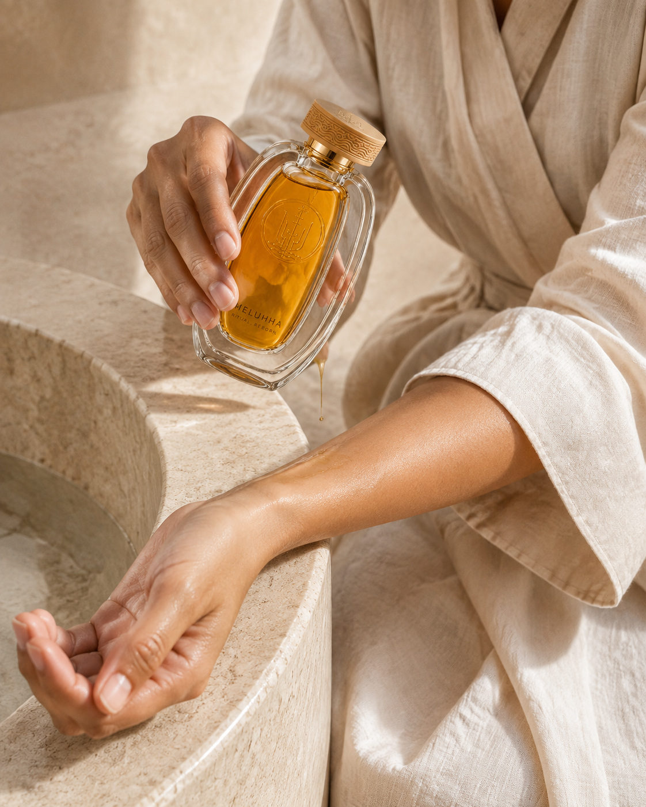
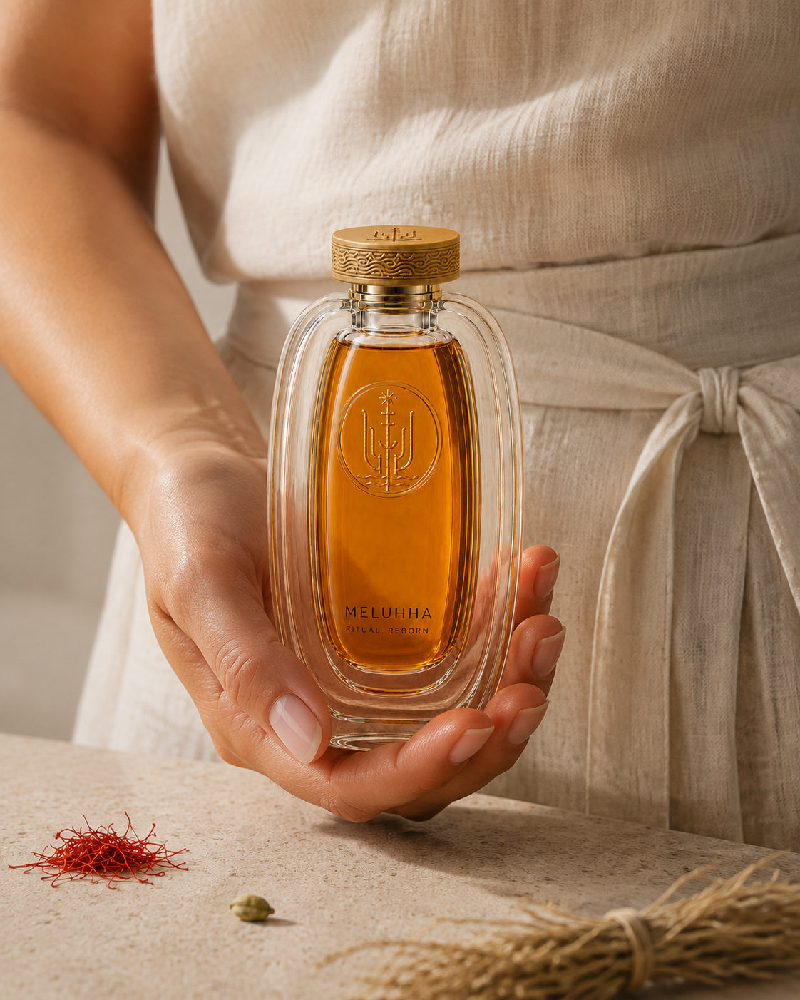
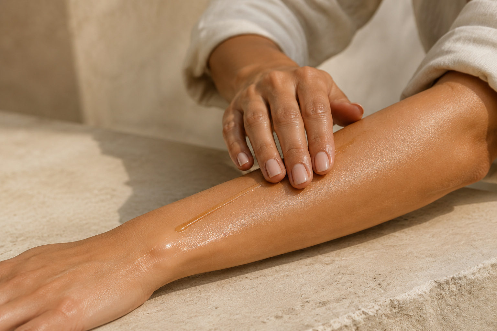
Film placeholder · 5 chaptersV · The Ritual
Bathe, then pat the skin until it remains slightly damp.
Pour a small measure into the palm and let body heat loosen the oil.
Place it where the skin feels dry before beginning to spread.
Use long, unhurried strokes until the skin feels supple, not wet.
Let the oil settle before dressing or layering fragrance.
Ritual is care made visible through repetition.
Layering · The ritual before the fragrance
Care for the body first, while the skin is still slightly damp.
Let the oil settle until the surface feels conditioned, not wet.
Apply fragrance to nearby pulse points without rubbing the two rituals together.
Choose related or contrasting botanical characters. Let the finished pairing decide.
Objects of the House
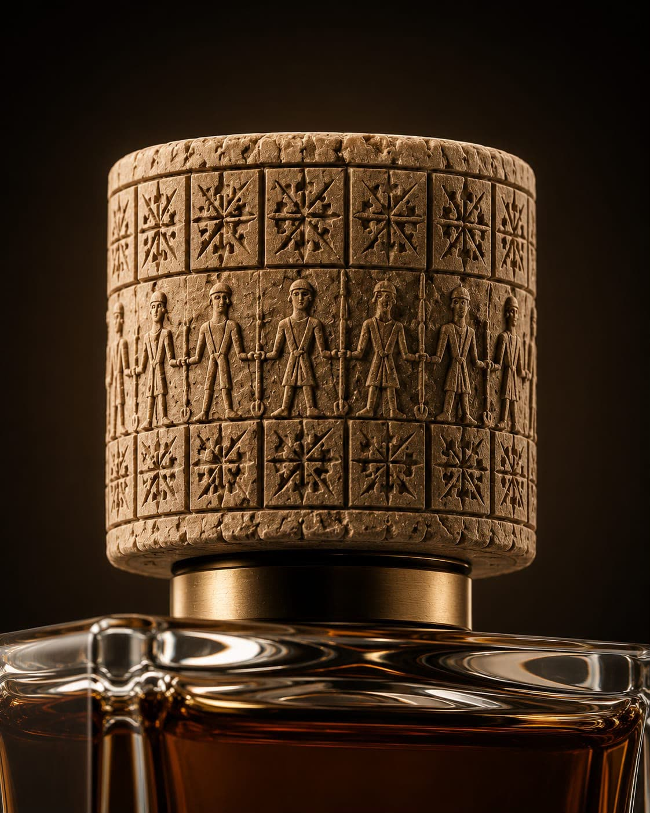
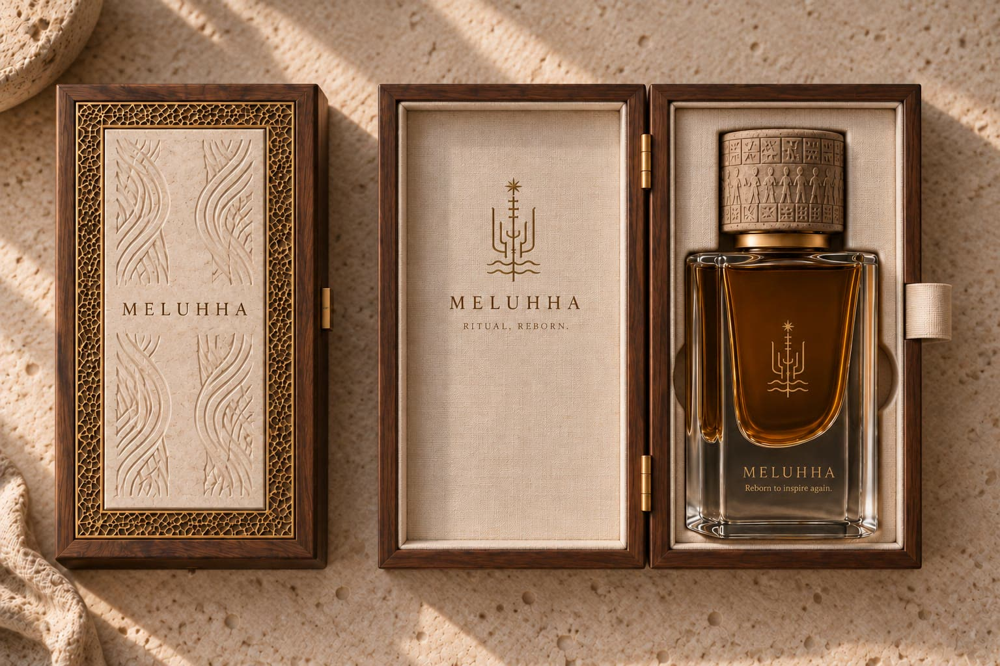
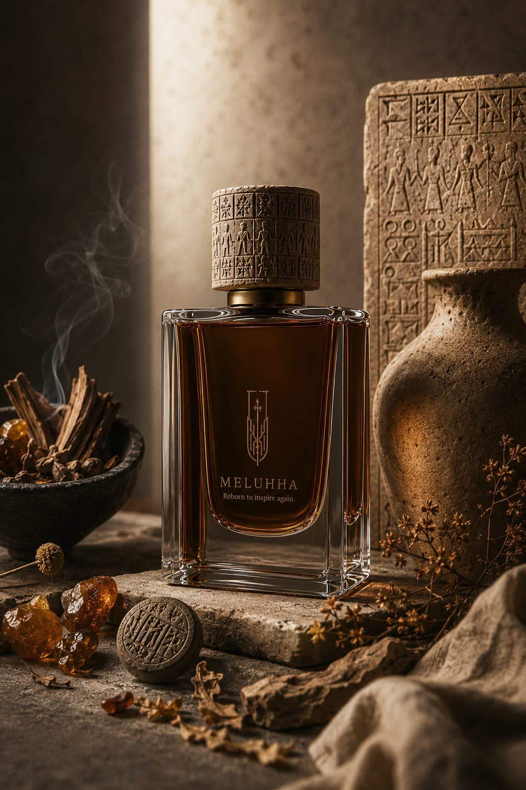
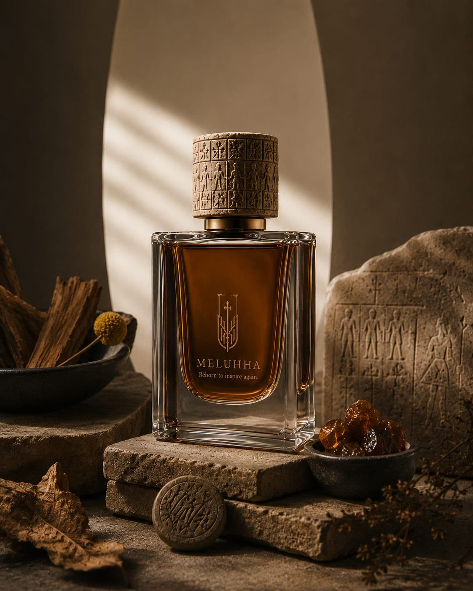
VI · Collection
Choose by skin need, texture and the moment of care.
Care truth
Oil does not add water to the skin. Used after bathing, an emollient body oil helps soften the surface and reduce the escape of existing moisture. That is why timing matters as much as quantity.
Soften · Seal · Comfort
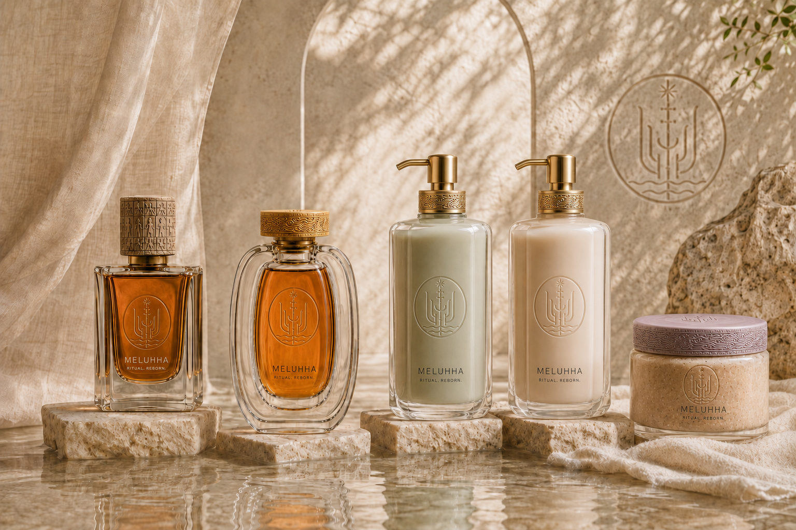
Some things are not invented. They are rediscovered.